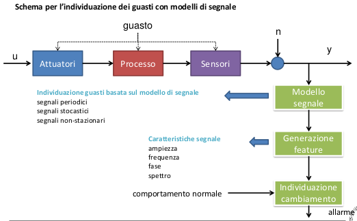

Signal-based fault detection
Molti segnali misurati di un processo mostrano oscillazioni che hanno una natura stocastica oppure periodica.
Se i cambiamenti di questi segnali sono legati a un guasto sui sensori/processo/attuatori,allora è possibile utilizzare le tecniche di signal model-based fault-detection.
Queste tecniche sono frequentemente usate nell’analisi delle vibrazioni di macchine rotanti sia con misure di natura meccanica (e.g. posizione, velocità e accelerazione), sia di natura
elettrica (e.g. correnti nei motori).
Esse si basano su uno o più modelli del segnale acquisito per poter estrarre delle caratteristiche quali l’ampiezza, la fase, lo spettro, le funzioni di correlazione, ecc ...
Tali caratteristiche sono confrontate con quelle estratte durante il funzionamento nominale del sistema (i.e. fault free), in modo da ottenere dei sintomi analitici per la valutazione del
guasto.
Le tipologie di modello per i segnali si possono dividere in:
- modelli non parametrici (e.g. spettri di frequenza o funzioni di correlazione),
- modelli parametrici (e.g. ampiezze a diverse frequenze, modelli autoregressivi).


Analisi di segnali periodici


DISCRETE TIME FOURIER TRANSFORM


Analisi di segnali periodici non stazionari


Analisi di segnali stocastici